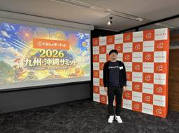

くらしのマーケット開発ブログ
https://tech.curama.jp/
「くらしのマーケット」を運営する、みんなのマーケット株式会社のテックブログです
フィード

エンジニアが再び出店者サミットに参加してみた
くらしのマーケット開発ブログ
こんにちは、SRE のあべです。 2 年前に紹介した「出店者サミット」に、再び参加してきました！ 今回は、福岡で開催された九州・沖縄サミットです。 記念写真 ちなみに、福岡県天神の"てんちか"と呼ばれる地下街にはくらしのマーケットの広告が流れてました。 てんちかで目を惹きつける広告が流れています 前回の記事はこちら ↓ tech.curama.jp 前回の記事では、エンジニア目線での発見や出店者との交流についてまとめましたが、今回はさらにパワーアップしたサミットの体験を紹介したいと思います。 改めて、サミットとは 「くらしのマーケット」に出店している出店者の方々が参加する、出店者コミュニティイ…
4日前

システム刷新という話 第３話
くらしのマーケット開発ブログ
minmaの開発組織の話 突然ですが、 みなさんはサッカーは好きですか？ 私は好きです。 観るのも、 やるのも、 どちらも好きです。 週末はつい試合を観てしまいますし、 ワールドカップの年になると、寝不足になります。 そして2026年。 またワールドカップがやってきます。 そんなタイミングもあって、 今回は少し変わった形で、 私たちの話を書いてみようと思いました。 こんにちは。 エンジニアリングマネージャーのユジンです。 技術の話をそのまま説明するのではなく、 サッカーに例えて、 開発組織の話をしてみようと思います。 まず、この図を見てください。 一見するとフォーメーション図ですが、 実はこれ…
18日前
システム刷新という話 第２話
くらしのマーケット開発ブログ
キッチンとホールのあいだで（バックエンドとフロントエンドのあいだで） こんにちは。エンジニアリングマネージャーのユジンです。 今回は、minma がいま抱えている課題について、 少しお話ししてみたいと思います。 minma では、月に一度、業績共有会があります。 その中で、ときどき「くらしのマーケット」のシステムの状況について、 全社の前で共有する機会があります。 ただ、会場にはエンジニアではない方が、8割ほどいらっしゃいます。 そのため、技術の話をそのまま説明しても、なかなか伝わりにくく、 「ちゃんと伝えられなかったな」と感じることが、何度かありました。 そこで今回は、そのときの反省も踏まえ…
1ヶ月前
システム刷新という話
くらしのマーケット開発ブログ
「システム刷新」という言葉を、 皆さんはどんな場面で聞いたことがあるでしょうか? はじめまして。 私は、みんなのマーケット株式会社（以下、minma）で、エンジニアリングマネージャーをしています。 ちょうど一年前、この場所にやってきました。 minmaでは、約15年にわたって「くらしのマーケット」というサービスを運営しています。 約400を超えるサービスカテゴリ。 それぞれの暮らしのすぐそばで、今日も静かに使われています。 長く続くサービスには、必ず時間が積もります。 ユーザーが増え、店舗が増え、 その一つひとつに応えるように、システムも姿を変えてきました。 開発のやり方が変わり、 運用の考え…
2ヶ月前
Redash の出力結果を Chrome 拡張機能で Markdown にコピーできるようにした話
くらしのマーケット開発ブログ
こんにちは、エンジニアの yuma です。 突然ですが、皆さんは Redash を使っていますか？弊社では本番データを参照する際に Redash を使っており、エンジニアはもちろん、エンジニアでない方もデータ分析に活用しています。 redash.io Redash では豊富なビジュアライゼーションが提供されていますが、データ分析には有用な一方でエンジニア間でデータを共有するには少々不便でした。 そこで、Redash の出力結果を Markdown のテーブルでコピーできるようにする Chrome 拡張機能を作成しました。拡張機能自体を公開することはできませんが、 Chrome 拡張機能の開発や…
2年前
エンジニアが出店者が集まるイベントに参加してみた
くらしのマーケット開発ブログ
バックエンドエンジニアのあべです。 エンジニアが、サミットと呼ばれる出店者イベントに参加した感想をまとめてみました。 動画も含めて紹介していますので、ぜひご覧いただければと思います。 サミットとは くらしのマーケットに出店している方々（以下、出店者）が、参加する出店者コミュニティのイベントです。 東京・大阪・名古屋・福岡など全国各地で開催されており、毎回多くの出店者が参加しています。 基本的には、出店者が企画・運営をしており、くらしのマーケットで活躍する出店者の発表やグループワークを通じて、サービスページの作り方や集客方法などお互いに情報共有して教え合う場となっています。 サミットの動画↓ w…
2年前
ts-pattern という OSS のコードリーディングしてみた
くらしのマーケット開発ブログ
はじめに どのようにコードリーディングしたのか 今回のサンプルコードについて match() with() P.any isUnknown() when() chainable() exhaustive() まとめ はじめに こんにちは！バックエンドエンジニアのハラノです。 最近開発をしていて、try catchを使ったエラーハンドリングに少し不満を持つようになりました。 型だけを見ても発生しうる Error がわからないため、エラーハンドリングを行うときに、実際の処理を追う必要がある上、エラーハンドリングが網羅されていなくてもコンパイルが失敗しないからです。 そのため、より適切にエラーハンド…
2年前
Twilio AudioSwitchを使ってAndroid Bluetooth通話を爆速で開発する方法
くらしのマーケット開発ブログ
こんにちは、モバイルアプリエンジニアのリュウです。 最近、ワイヤレスイヤホンなどのBluetoothデバイスを使って通話する対応を行いました。 そこで、Twilio AudioSwitchというライブラリを知って利用しました。 本記事では、AudioSwitchの使い方とその開発で得た知見をご紹介します。 開発の背景 我々「くらしのマーケット」が提供しているユーザー向けアプリと店舗向けアプリには、 インターネットを介したIPネットワークを通じて音声通話をする機能（VoIP）があります。 ユーザーがアプリ内での通話をより便利に利用できるために、以下のようなさらなる進化を遂げたいと考えました。 -…
2年前
Node.js18を20にアップデートして、jestの実行速度を3倍にした
くらしのマーケット開発ブログ
こんにちは！バックエンドエンジニアのハラノです。 くらしのマーケットのシステムの中には、Node.js（NestJS）を使用したマイクロサービスが存在しており、今回 Node.js のバージョンアップを行いました。 バージョンアップの方針及び、実際にアップデートを行う際に出てきた問題とその対策をご紹介します。 バージョンアップの方針 バージョンアップの結果 各種対応において、発生した問題と対応 TypeScript のバージョンアップ NestJS のバージョンアップ @nestjs/common から HttpService, HttpModule が削除された Inject にInject…
2年前
セッションストア(ElastiCache for Redis)の分離作業と発生した問題を振り返る
くらしのマーケット開発ブログ
SRE の片山です。 実は12月の SpeakerDeck の担当者が決まっていませんでしたが、4月に投稿したこちらのスライドがありがたいことに一番多くの view を獲得した...ということで選ばれました。 tech.curama.jp ところで、最近ベトナムで行っている開発に関わることが増えました。そしてある機能の開発を進めるタイミングで負債化してきたセッションストアに利用している ElastiCache クラスターの一部のキーを新しいクラスタへ分離する良い機会が訪れました。 ベトナムの開発が気になる方はこちらを参照ください。 tech.curama.jp いい機会だ、ということで分離作業…
2年前
バンドルファイルのサイズを50%軽量化した話
くらしのマーケット開発ブログ
こんにちは、みんなのマーケットでエンジニアをしているきたがわです。 今回はくらしのマーケット内で読み込まれるバンドルファイルを軽量化した話について紹介いたします。 ぜひご覧ください！ 発表資料 speakerdeck.com
2年前
プロダクトが日の目を見るまでにPMがやっていること
くらしのマーケット開発ブログ
プロダクトが日の目を見るまでにPMがやっていること こんにちは、みんなのマーケットでプロダクトマネージャーをしているたざきです。 最近よく聞くプロダクトマネージャー（PM)ですが、実際どんな仕事をしているかはよくわからない方も多いのではないでしょうか？ 今回は当社のPMがどのような仕事をしていて、どのような人と関わりながら進めているかをスライドにまとめました！ PMにチャレンジしてみたい！という方にはぜひご覧いただければと思います。。 発表資料 speakerdeck.com
2年前
Twilio SDKをFlutterアプリに統合した話
くらしのマーケット開発ブログ
Twilio SDKをFlutterアプリに統合した話 こんにちは、みんなのマーケットでエンジニアをしているリュウです。 当社では、アプリ開発にFlutterという技術を採用しています。 今回は、FlutterアプリでTwilio SDKを使って電話機能を実装した話を紹介しています。 Flutterで開発しようかと考えている方に、ご参考になれば幸いです。 発表資料 speakerdeck.com
2年前
くらしのマーケットの後払い
くらしのマーケット開発ブログ
こんにちは、みんなのマーケットでエンジニアをしているあんどうです。 今回は、先日リリースした後払い決済サービスについて、その内容をご紹介します。 ぜひご覧ください！ speakerdeck.com
3年前
キャンペーンの開発工数を大幅に減らした話
くらしのマーケット開発ブログ
こんにちは！みんなのマーケットでエンジニアをしているあべです。 くらしのマーケットでは、定期的にキャンペーンを開催しています。 今回は、キャンペーンの開発工数を大幅に減らしたので、その内容を紹介しています。 ぜひご覧ください！ 発表資料 speakerdeck.com
3年前
「くらしのマーケット」のデザインガイドラインを作った話
くらしのマーケット開発ブログ
こんにちは！みんなのマーケットでデザイナーをしている福間です。 昨年くらしのマーケットの「デザインガイドライン」を新たに作成し、それをもとに「デザインリプレイス」を行いました。 どこがどう変わったのか、どうやって決めていったのかを大まかにまとめましたので、ぜひご覧ください。 発表資料 speakerdeck.com
3年前
マイクロサービスの不整合に立ち向かうため仕組みを整えたという話
くらしのマーケット開発ブログ
分散システムのデータ不整合に立ち向かうため気付けるようにした こんにちは！みんなのマーケットで SRE をしている片山です。 当社ではマイクロサービスアーキテクチャを採用しています。運用していく中で大敵であるデータ不整合に立ち向かう第一ステップとして仕組みを整え運用してきました。また、最後の方で実際に運用してきて感じたことも紹介しています。 参考になれば幸いです！ 発表資料 speakerdeck.com
3年前
2ヶ月で20個のアイディアを最速でリリースした話
くらしのマーケット開発ブログ
こんにちは。みんなのマーケットでプロダクトマネージャーをしているめぐみです。 くらしのマーケットでは300種類以上の様々な出張訪問サービスを扱っています。 より多くの出張訪問サービスを増やすことにコミットしたときを振り返り、最速でアイディアをリリースするために大切だったことをまとめました。 発表資料 speakerdeck.com
3年前
ベトナムで開発をはじめた話
くらしのマーケット開発ブログ
こんにちは。みんなのマーケットでCTOをしている戸澤です。 くらしのマーケットは扱っている出張サービスの種類(カテゴリ)が多く、カテゴリ毎にプロダクト開発が必要になります。 その開発をより大規模、かつ、高速に進めていくためにベトナムでの開発スタートしました。その事例を紹介します。 発表資料 speakerdeck.com
3年前
VPNをやめてCloudflare Accessへ移行した話
くらしのマーケット開発ブログ
こんにちは。みんなのマーケットでCTOをしている戸澤です。 2020年のコロナウイルス流行から当社はフルリモートワークへ働き方を切り替えました。 現在は出社する人数も増えていますが、現在も大多数はリモートワークをしています。 今回、リモートワークで使用していたVPNをやめて、Cloudflare Accessと切り替えた事例を紹介します。 発表資料 speakerdeck.com
3年前
「くらしのマーケット」のロゴを変更した話
くらしのマーケット開発ブログ
こんにちは。みんなのマーケットでUI/UXデザイナーをしている「みそ」です。 これまでの「くらしのマーケット」のロゴの変更目的をまとめました。 我々デザイナーがプロダクトを作る上で何を大事にしているのか、どういう基準で判断しているのか。プロダクト、サービスが今どういう状態にあるのか。このあたりのことが参考になればど思います。 発表資料 speakerdeck.com
3年前
レポート作成機能の開発とS3・ECSに関する小話
くらしのマーケット開発ブログ
こんにちは、バックエンドエンジニアの富永です！ 今年も早いもので、もう11月ですね〜。 最近東京では過ごしやすい気候が続いています。寒さが苦手な自分にとってはずっとこのままでいてほしいな〜、と願って止まない今日この頃です。 さて私事ですが、今年6月にみんなのマーケットにジョインし、レポート作成機能という新規機能の開発を担当させていただきました。 その際に、Amazon S3（以下、S3）・Amazon Elastic Container Service（以下、ECS）を活用し開発しました。前職で少しAWSの経験はあったのですが、AWS SDKを使っての開発はほぼ初めての経験で、機能要件を満たす…
4年前
Django ORMとAldjemyの共存環境でRead Replicaを利用する
くらしのマーケット開発ブログ
こんにちは、バックエンドエンジニアのキダです。 最近DjangoのアプリケーションにてRead Replica（リードレプリカ）構成を検証してみたので、その内容を共有しようと思います。 この記事では、DjangoのアプリケーションからDB操作にはDjango ORMと、Aldjemyを使う前提の構成になります。 Django ORMやAldjemyそのものについては以下のWebサイトをご参照ください。 DjangoでSQLAlchemyを使ってみよう Read Replica構成について まず前提として一般的なアプリケーションでのRead Replica構成について説明します。 databas…
4年前
ISUCONの過去問にチャレンジしてみた: Part-2
くらしのマーケット開発ブログ
こんにちは、バックエンドエンジニアの片山です。 ISUCON 11の予選に参加したのですが、まだまだできることがあると思い、同じ問題に再挑戦しました！ 問題のソースコード: https://github.com/isucon/isucon11-qualify マニュアル: https://github.com/isucon/isucon11-qualify/blob/main/docs/manual.md アプリケーションについて: https://github.com/isucon/isucon11-qualify/blob/main/docs/isucondition.md Part-1 …
4年前
AngularJS製のページをReactでリプレースした話
くらしのマーケット開発ブログ
AngularJS to React こんにちは、みんなのマーケットでフロントエンドエンジニアをしている山本です。 先日、AngularJSで書かれていた一部のページをReactでリプレースするプロジェクトのリリースが無事終わったため、経緯や知見を共有いたします。 前提の共有 リプレースの背景を説明する前に、必要な前提の共有をいたします。 弊社が提供するサービス、くらしのマーケットのWebアプリケーションには大きく分けると2つのページが存在します。 1つ目が、一般ユーザーが利用する「ユーザー側」と呼ばれるページです。「くらしのマーケット」と検索して出てくるページがこちらです。 2つ目が、くらし…
4年前
ISUCONの過去問にチャレンジしてみた: Part-1
くらしのマーケット開発ブログ
こんにちは！バックエンドエンジニアのカーキです。 今年の9月に初めてISUCONに挑戦してみたのですが、予選で手も足も出なくて悔しい思いをしました。問題は面白かったので、同じ問題をもう一度本気で解いてみました。 問題のソースコード: https://github.com/isucon/isucon11-qualify マニュアル: https://github.com/isucon/isucon11-qualify/blob/main/docs/manual.md アプリケーションについて: https://github.com/isucon/isucon11-qualify/blob/mai…
4年前
新卒エンジニア向けお仕事紹介資料を公開しました
くらしのマーケット開発ブログ
こんにちは。みんなのマーケットでCTOをしている戸澤です。 みんなのマーケットでは、エンジニアの新卒採用を通年で行っています。 新卒の方はコードを書く以外の業務を、入社前の時点で想像することは難しいです。 チーム開発、特にPM、デザイナーなど様々な職種の人と協働する点や、継続的な機能改善などは学習の場では経験できず、業務ではじめての経験になることがほとんどだと思います。 このお仕事紹介資料はコードを書く以外の業務について入社前に理解を深めることを目的に、職種紹介、開発案件に対してチームでどう動くかなどを紹介したものです。
5年前
時代に先駆け、EV（電気自動車）コンセント設置カテゴリを追加したお話
くらしのマーケット開発ブログ
EV（電気自動車）コンセント設置イメージ こんにちは。 みんなのマーケットでカテゴリーマネージャーをしている工藤です。 当社が運営しているサービス「くらしのマーケット」では、常に人に必要とされているサービスの模索、展開を行っています。 今や生活には欠かせない「自動車」関連のカテゴリを昨年リリースし、ユーザーの皆様の役に立つサービスの展開を続けています。 僕自身、週末は子供と一緒にアクティブに行動するタイプで、自家用車（愛車のVOXY）で高速道路もよく利用します。 もちろん、ソーシャルディスタンスを保ちながら！ 高速道路のサービスエリアや道の駅などで、ここ数年やたら目にするようになったEV（電気…
5年前
Stripe Connect Expressの利用事例を発表しました
くらしのマーケット開発ブログ
こんにちは。みんなのマーケットでCTOをしている戸澤です。 くらしのマーケットでは2020年8月に初の決済機能である、オンラインカード決済機能をリリースしています。 オンラインカード決済機能の実装では決済代行としてStripe社のConnectを使用しています。 Connectはくらしのマーケットのような、売り手、買い手、プラットフォーマーの3者がいるマーケットプレイス向けのプロダクトです。 今回、Stripeのユーザーコミュニティである、JP_Stripesさんよりお誘いいただき、 くらしのマーケットでのConnectの選定の背景、リリースの運用面についてお話させていだきました。 発表資料 …
5年前
ヤッホー！シワちゃんだよーん
くらしのマーケット開発ブログ
こんにちは、バックエンドエンジニアのキダです。 先日くらしのマーケットでSign In With Apple（SIWA）対応のリリースをしました！ SIWA対応でハマった点などを紹介いたしますので、興味がある方は参考にしてください。 背景 AppleのポリシーによりApple IDでログインできるソーシャルログイン機能のSign In With Apple（SIWA）は2020年7月より対応必須となりました。 ※ 元々は2020年4月からとなっていましたが、コロナウィルスの影響もあり延期されていました 対応必須の詳細は以下になります。 ソーシャルログイン機能持つアプリはSIWAの対応が必要 対…
5年前